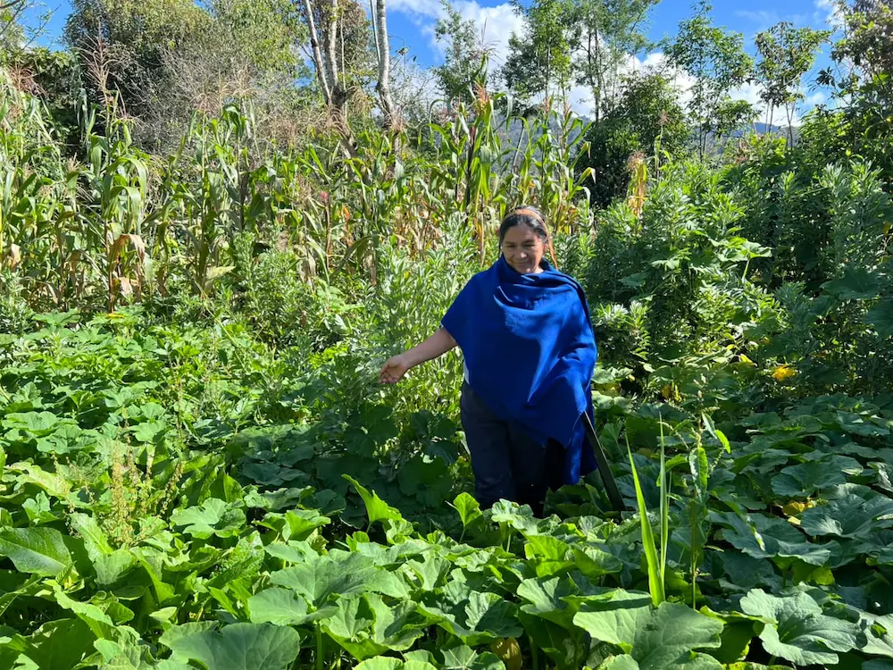

Nuestros productores · Finca Putumayo
Familia
Chindoy Muchavisoy
Vereda Tamabioy, Sibundoy, Putumayo
Guardianes de la tierra
“La tierra no nos pertenece; nosotros pertenecemos a ella.”
Desde hace tres generaciones, nuestra familia despierta con la neblina del valle para cuidar esta tierra fértil. Aquí aprendimos que cultivar no es solo producir alimento: es guardar memoria de nuestros ancestos.
Hoy abrimos las puertas de nuestra finca para que cada familia en la ciudad conozca de dónde viene lo que lleva a su mesa.
año en que comenzó
nuestra finca
cultivadas con prácticas
responsables
integrantes de la familia
trabajando juntos
Un día en la finca
La finca en imágenes

Nuestra forma de cultivar
Sembramos despacio, cosechamos con orgullo.
Rotamos los cultivos, usamos abonos orgánicos y respetamos el agua que baja de la montaña. Cada decisión busca que esta finca siga alimentando a las próximas generaciones.
Comprar su cosecha